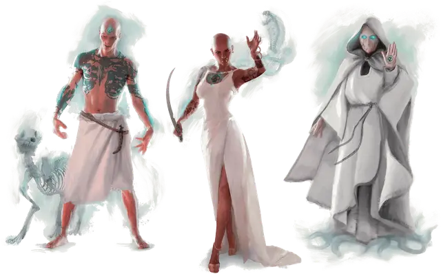

Жрец Осибуса
Priest of Osybus
Средний Гуманоид

Класс Доспеха 14 (природный доспех)
Хиты 60 (8к8 + 24)
Скорость 30 футов
| мод | спас | ||
|---|---|---|---|
| СИЛ | 10 | +0 | +0 |
| ЛОВ | 14 | +2 | +2 |
| ТЕЛ | 16 | +3 | +3 |
| мод | спас | ||
|---|---|---|---|
| ИНТ | 18 | +4 | +7 |
| МДР | 17 | +3 | +6 |
| ХАР | 11 | +0 | +3 |
Иммунитет к состояниям испуг
Чувства тёмное зрение 120 футов, пассивное Восприятие 13
Опасность 6 (2300 опыта)
Бонус мастерства +3
Особенности
Языки. Любые три языка.
Татуировка Осибуса. Если хиты жреца опустятся до 0, совершите бросок по таблице "Блага несмерти" для определения полученного жрецом блага. Жрец умирает, если он получает благо, которое у него уже есть. Если он получает новое благо, он возрождается в начале следующего хода с половиной своих хитов, и его тип существа становится нежить.
Чтобы предотвратить это возрождение, татуировка Осибуса на теле жреца должна быть уничтожена. Татуировка неуязвима пока жрец имеет по крайней мере 1 хит. В противном случае татуировка — это объект, имеющий КД 15, иммунитет к урону ядом и психической энергии. У неё 15 хитов, и она восстанавливает все свои хиты в конце хода каждого участника сражения.
Блага несмерти. Когда хиты жреца Осибуса опускаются до 0, жрец может возродиться с благом из таблицы "Блага несмерти", как описано в блоке статистики. Вы можете дать жрецу одно или несколько из этих благ по вашему выбору, до того как жрец столкнется с искателями приключений. Если вы это сделаете, жрец будет нежитью, а не гуманоидом. Жрец может получить каждое благословение только один раз.
Блага несмерти.
| к6 | Блага |
| 1 | Ужасное. Вокруг жреца слышен жуткий шепот. Любое существо, не являющееся нежитью, которое начинает свой ход в пределах 30 футов от жреца, должно преуспеть в спасброске Мудрости Сл 15, иначе станет испуганным жрецом до начала своего следующего хода. |
| 2 | Эктоплазматическое. Потусторонняя слизь стекает со жреца и исчезает через несколько мгновений, оставляя зеленоватое пятно. Когда любое существо начинает свой ход в пределах 10 футов от жреца, он может уменьшить скорость этого существа на 10 футов до начала следующего хода существа, до тех пор существо покрыто эктоплазмой. Кроме того, действием жрец может использовать слизь, чтобы выглядеть и чувствовать себя как любое существо Среднего или Маленького размера, сохраняя при этом свои характеристики. Эта трансформация длится в течение 8 часов или до тех пор, пока хиты жреца не опустятся до 0. |
| 3 | Вампирическое. Когда жрец наносит урон некротической энергией какому-либо существу, он получает количество временных хитов, равное половине этого урона. Также скорость жреца увеличивается на 10 футов. |
| 4 | Пылающее. Жрец сбрасывает с себя плоть, и его скелет рассыпается, оставляя только череп. Его блок статистики заменяется блоком статистики пылающего черепа [flameskull], но он сохраняет свою особенность Татуировки Осибуса, и весь урон от огня, который он наносит, превращается в урон некротической энергией. Татуировка Осибуса теперь вырезана на лбу черепа. |
| 5 | Спектральное. Жрец теперь выглядит как призрак, и его показатель опасности увеличивается на 1. Он приобретает сопротивление всем видам урона, кроме урона силовым полем, излучением, психической энергией, и становится уязвим к урону излучением. Он может перемещаться сквозь других существ и предметы, как если бы они были труднопроходимой местностью. Он получает 5 (1к10) урона силовым полем, если заканчивает ход внутри предмета или существа. |
| 6 | Смертельное. Лицо жреца становится скелетно-белым, и его показатель опасности увеличивается на 1. Он может накладывать восставший труп [animate dead] и сотворение нежити [create undead] один раз в день каждое, используя Интеллект в качестве заклинательной характеристики, и получает следующее действие: Круг смерти (заклинание; перезарядка 5-6). Все существа в сфере с радиусом 60 футов с центром в точке, которую жрец может видеть в пределах 150 от себя, должны совершить спасбросок Телосложения Сл 15, получая 28 (8к6) урона некротической энергией при провале или половину этого урона при успехе. |
Действия
Мультиатака. Жрец атакует дважды.
Клинок души. Рукопашная атака оружием: +5 к попаданию, досягаемость 5 фт., одна цель. Попадание: 7 (2к4 + 2) колющего урона, и если целью является существо, оно становится парализованным до начала следующего хода жреца. Если этот урон уменьшает хиты Среднего или меньшего размера существо до 0, существо умирает, и его душа оказывается в ловушке в теле жреца, проявляясь в виде теневой татуировки души. Душа освобождается, если жрец умирает.
Некротический снаряд. Дальнобойная атака заклинанием: +7 к попаданию, дальность 120 фт., одна цель. Попадание: 17 (3к8 + 4) урона некротической энергией, и цель не может восстанавливать хиты до начала следующего хода жреца.
Бонусные действия
Татуировка души (перезарядка 5-6). Жрец прикасается к одной из татуировок души на его теле. Татуировка исчезает, а пойманная в ловушку душа проявляется в виде призрачного существа в свободном пространстве, которое жрец может видеть в пределах 30 футов от себя. Существо имеет размер и силуэт своего первоначального тела, но в остальном оно использует блок статистики тени [shadow].
Тень подчиняется мысленным командам жреца (никаких действий не требуется) и ходит сразу после жреца. Если она находится в пределах 5 футов от жреца, она может действием превратиться обратно в татуировку, вновь появляясь на теле жреца и восстанавливая все свои хиты.
Описание
Некроманты глубинного зла, жрецы Осибуса крадут души других, чтобы подпитывать злую жреческую магию. Используя эту силу души, каждый жрец может бросить вызов смерти и стать нежитью, потенциально обманывая смерть снова и снова.
Этот нечестивый орден жрецов был основан много веков назад Осибусом, мистическим воплощением безграничных амбиций и зла. Осибус стремился использовать чужие души в качестве отправной точки для своего собственного бессмертия. Он заключал договоры с каждым существом, которое укрепило бы его власть, и постигал любую сверхъестественную тайну, которая продлевала его жизнь. Он стал приверженцем Тёмных Сил и воспользовался их бессмертной злобой, чтобы подпитывать свой апофеоз.
По мере того как его сила росла, он привлекал учеников, которые также хотели бросить вызов жизни и смерти. Он делился с ними своими страшными секретами и требовал их поклонения. Со временем его цель была достигнута: он стал личом почти божественной силы. Признавая роль, которую его ученики сыграли в его вознесении, Осибус одарил их наследием своей силы. Приняв форму призрачной татуировки, этот дар позволяет жрецам красть души, как это делал их хозяин, обманывать смерть и становиться ужасной нежитью.
Исходящая от Осибуса и его учеников угроза привела к всебобщей тревоге. В результат Ульмистская инквизиция и тогда ещё смертный граф Страд фон Зарович схлестнулись в битве с личом. Их храбрость была бы напрасной, если бы ученики Осибуса не предали его. Опасаясь, что их учитель в конечном итоге поглотит их души, ученики помогли врагам Осибуса и уничтожили его физическую форму. Умирая, он наложил на них проклятие — что их бессмертие подведет их, когда они меньше всего этого ожидают, и что он сам станет одной из Тёмных Сил. В результате этого проклятия ни один жрец Осибуса не может быть уверен, что возродится после смерти.
В попытке избавиться от этого проклятия они посвятили себя тем же Тёмным Силам, с которыми сотрудничал их учитель. Им была дана задача: найти человека благородного и могущественного, чтобы он служил земным сосудом для этих сил, чтобы те вошли в мир и завоевали его. Если бы им это удалось их бессмертие было бы обеспечено. Подходящий сосуд был найден, и имя его было Страд фон Зарович. Работая в тени и через посредников, жрецы прививали ненависть графу, и когда его благородное сердце было испорчено, именно они навели его на путь, который привел к Янтарному храму и его становлению вампиром.
Но потом их предали. Осибус не солгал; он сам стал одной из Тёмных Сил, и он и другие Тёмные Силы создали тюрьму из тумана, чтобы содержать недавно ставшего бессмертным Страда, тем самым не позволив графу стать завоевательной силой, которую жрецы стремились выпустить в мир; им было отказано в награде в виде бессмертия.
По сей день жрецы Осибуса стремятся освободить Страда из Туманов, часто используя авантюристов в качестве своих пешек. Также по иронии судьбы они носят имя своего ненавистного родоначальника, поскольку знают, что именно его изначальный смертный дар дает им их ужасающие силы.